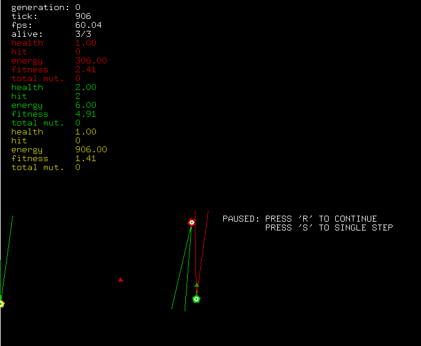

This is my page for documentation for projects hosted on GitHub. Documentation on this page may be out of date, for the up to date files view the projects at howerj.
embed is a self-hosted Forth with a "meta-compiler" (or a cross compiler). This includes a detailed description of how to write a Forth in Forth.
libforth is a Forth interpreter written in C.
The H2 FPGA SoC is a CPU written in VHDL for a Spartan-6 Xilinx FPGA, it executes Forth directly and is based on the J1 Forth CPU. A video below shows its operation, accepting commands via a keyboard and displaying the results on a VGA monitor.
liblisp is a lisp interpreter written in C. Which includes a module system so that DLLs (under Windows) and Shared Objects (under Linux) can be loaded in at run time.
DBCC is a utility for turning a DBC file into some C code that can parse and package CAN messages which the DBC file describes. It can also produce an XML description of the messages.
gladiators is a project which uses a genetic algorithm to evolve an Artificial Neural Network that controls creates called 'gladiators' which compete in a Darwinian battle for survival.
My CV is available here, I graduated Aston University with a first class degree in Electrical and Electronic Engineering. I currently work in the Automotive Industry as an embedded software engineer
Mouse Jiggle is an AutoHotkey script for keeping a Windows machine from sleeping by moving the mouse cursor.
NVRAM is a concept project to show you how you can use the linker to automatically save variables to disk on program exit and load them at start up, without treating them specially or with extra serialization/deserialization steps. Doxygen is then used to extract which variables are saved to disk and Perl is called to automatically generate an editor for NVRAM dump. This concept is useful in an embedded system, where portability is not a concern.
Feel free to send me an E-mail.